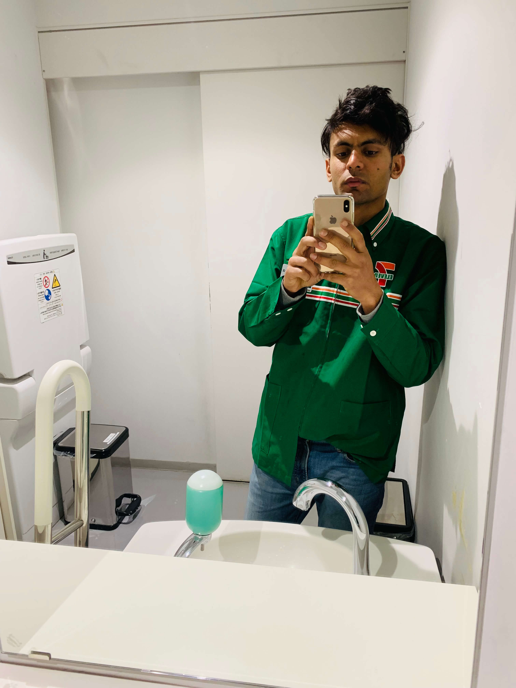
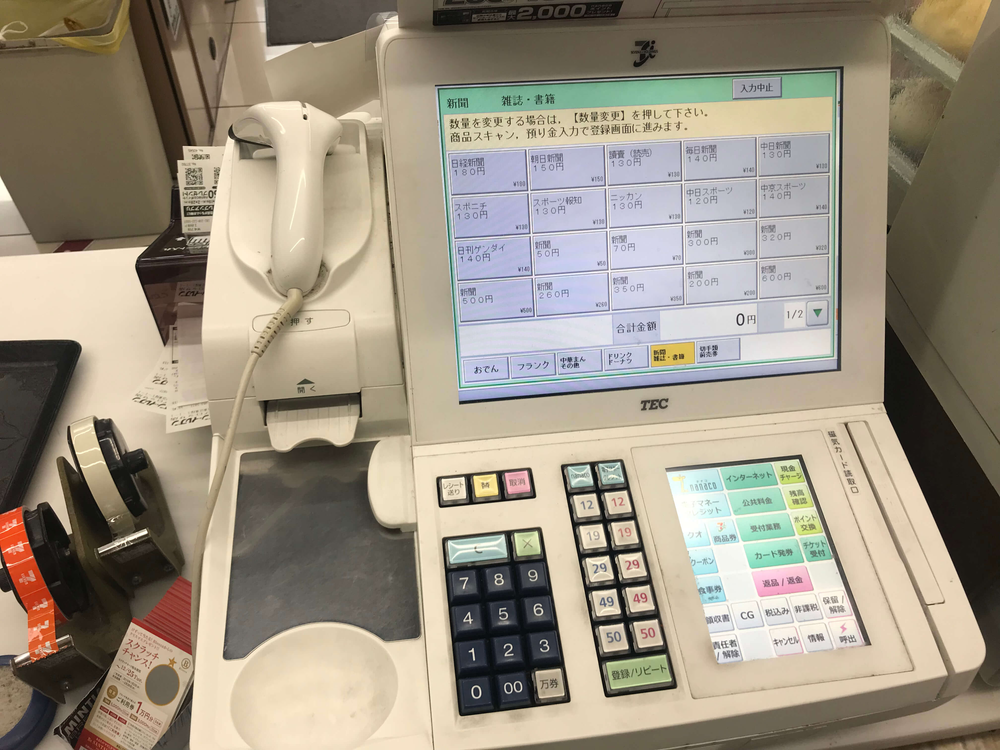

A Dream That Began as a Customer
When I first arrived in Japan, everything felt new. The trains, the language, the culture, and even the simplest daily routines were unlike anything I had experienced before. Every day became an opportunity to discover something different. One place quickly became part of my daily routine—the Japanese convenience store, or konbini as it is called in Japan. Near my language school, there was a Seven Eleven where I often stopped before class to buy a cup of coffee, breakfast, or a small snack. At first it was simply part of my morning routine, but gradually I began paying attention to something much more. The store was always spotless. Every product was perfectly organised. The staff greeted every customer politely and worked with incredible speed and professionalism. The more I visited, the more I admired the people working there. Without realising it, a small dream began to grow inside me. Without realising it, I had set a personal goal for myself: one day, I wanted to stand behind that counter instead of in front of it.
Searching for an Opportunity
Finding a part-time job as an international student was much harder than I had expected. I applied to many different stores hoping someone would give me an opportunity. Unfortunately, many never replied, and I understood why. At that time my Japanese language ability was still limited, and employers needed people who could confidently communicate with customers. Although I felt disappointed, I never stopped trying. Instead, I focused on improving my Japanese every single day. Every class, every conversation, and every experience helped me become a little more confident. Months later, my persistence finally paid off. I received an opportunity to work at a Seven Eleven store in Sakae, one of Nagoya's busiest districts. After months of waiting, improving my Japanese, and applying to different stores, I finally received the opportunity I had hoped for. I couldn't stop smiling. The job I had quietly dreamed about had finally become reality.
My First Days Behind the Counter
Although I was excited, my first few weeks were incredibly challenging. Japanese convenience stores are unlike ordinary shops. In Japan, convenience stores are known as konbini, and they are far more than places to buy food. They are an essential part of everyday life. Customers don't only buy food and drinks. They also pay utility bills, receive online shopping parcels, print documents, purchase event tickets, withdraw money, and use many other services. Every service had its own procedure. Every task had to be completed accurately. At first everything felt overwhelming. One of my biggest challenges was operating the cash register. The cash register system relied heavily on Kanji, and reading it quickly while serving customers was completely different from reading it in a textbook. I quickly realised that classroom Japanese and workplace Japanese were two very different experiences. I made many mistakes. Sometimes I pressed the wrong button. Sometimes I forgot the correct procedure. Sometimes I needed help from my coworkers. There were moments when I wondered if I would ever become good enough.

Growing Through Every Shift
Fortunately, I worked with patient and supportive coworkers. Instead of criticising my mistakes, they patiently explained every procedure and encouraged me to keep improving. Little by little, everything became easier. The tasks that once seemed impossible gradually became part of my daily routine. I became faster. I became more confident. I became more skilled. Soon I could confidently operate the register, prepare food, organise products, receive deliveries, and communicate naturally with customers in Japanese. Without realising it, my workplace had become another classroom.
More Than Just a Part-Time Job
Looking back today, I realise that Seven Eleven gave me much more than a salary. It taught me responsibility. It strengthened my discipline. It improved my Japanese communication skills. It showed me the importance of teamwork, punctuality, and respect. Most importantly, it taught me that persistence eventually creates opportunities. Looking back today, I smile whenever I pass a Seven Eleven. What once began as a simple stop for morning coffee became one of the experiences that shaped my life in Japan. It taught me that dreams don't always begin with grand ambitions. Sometimes they begin with the small places we visit every day.
"The classroom taught me Japanese. My workplace taught me life."
Work Notes
- 🏪 First part-time job in Japan
- 📍 Seven Eleven, Sakae, Nagoya
- ☕ Started as a regular customer before becoming an employee
- 🗣 Improved Japanese through daily customer conversations
- 📖 Learned Kanji while operating the cash register
- 🤝 Learned responsibility, teamwork, and professionalism